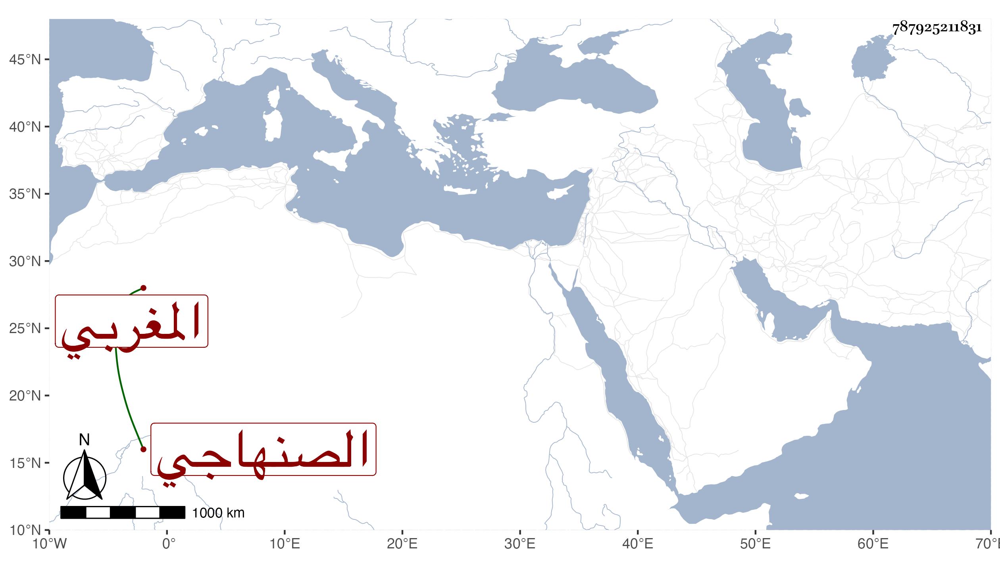

0902Sakhawi.DawLamic.ITO20230111-ara1.EIS1600.787925211831
Biography ID: 787925211831
461
عثمان بن سليمان الصنهاجي المغربي . قال شيخنا في إنبائه من أهل الجراير الذين بين تلمسان وتونس رأيته كهلا وقد شاب أكثر لحيته وطوله إلى رأسه ذراع واحد بذراع الآدميين لا يزيد عليه شيئا مع كونه كامل الأعضاء وإذا كان قائما يظن من رآه أنه صغير قاعد وهو أقصر آدمي رأيته وذكر لي أنه صحب أبا عبد الله بن الفخار وأبا عبد الله بن عرفة وغيرهما ، ولديه فضيلة ومحاضرته حسنة . مات في سنة خمس وعشرين وقد جاز الخمسين .
